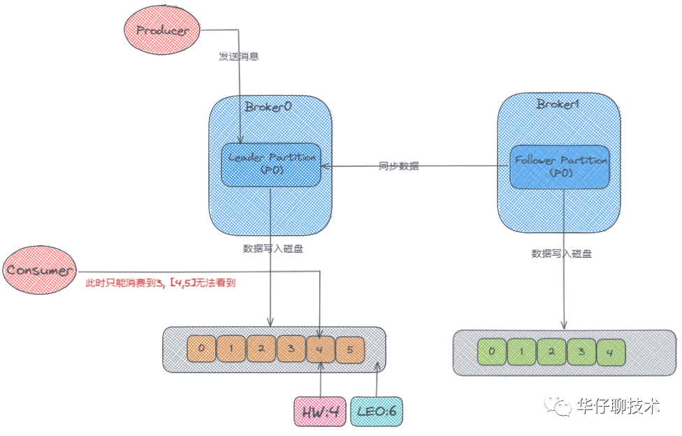
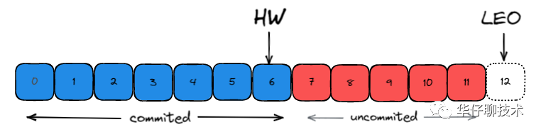

Kafka学习笔记
4. ISR，OSR，AR，LW，HW，LEO，ACK原理理论
kafkaIO
零拷贝—找周老师的IO课
sendfile(in, offset，out)
kafka对数据只是发送，没有加工的过程
分区的可靠性（CAP）
要解决一个问题，可能会引入其他问题，比如一致性问题
一致性
- 强一致性
- 所有节点比必须ack
- 最终一致性
- 过半机制
- 弱一致性
- ISR（in-sync replicas同步副本），连通性&活跃性
- OSR（outof-sync replicas不同步副本），超过阈值时间（10s）,没有心跳
- AR(Assignes replicas)，面向分区的副本集合，创建topic的时候你给出了分区的副本数
- AR=ISR+OSR
- ack=-1的时候，多个broker的消息进度是一致的
- 会与ISR相关的节点进行ack
- tradeoff
- 不要强调磁盘的可靠性，转向异地多机的同步
- 如果拿磁盘做持久化，优先pagecache或者绝对磁盘
- 在多机集群分布式的时候，强一致性，最终一致性（过半，ISR）
- 总结：
- redis，宁可用HA，不用刻意追求AOF的准确性
- 像Kafka，我们追求ack=-1,要求磁盘的可靠性
kafka弹性存储

首先这里有两个Broker，也就是两台服务器，然后它们的分区中分别存储了两个 p0 的副本，一个是 Leader，一个是 Follower, 此时生产者开始往 Leader Partition 发送数据，数据最终写到磁盘上的。然后 Follower 会从 Leader那里去同步数据，Follower上的数据也会写到磁盘上。可是 Follower 是先从 Leader 那去同步然后再写入磁盘的，所以它磁盘上面的数据肯定会比 Leader 的那块少一些。
概念
- LW：Low Watermark 数据裁剪
- HW：High Watermark，高水位：副本最新一条已提交消息的offset
- LEO：LogEndOffset，日志末端位移：副本中下一条待写入消息的offset
在 Kafka 中高水位的作用主要有2个:
- 用来标识分区下的哪些消息是可以被消费者消费的。
- 协助 Kafka 完成副本数据同步
而LEO一个重要作用就是用来更新HW:
- 如果 Follower 和 Leader 的 LEO 数据同步了, 那么 HW 就可以更新了。
- HW 之前的消息数据对消费者是可见的, 属于 commited 状态, HW 之后的消息数据对消费者是不可见的。

如上图所示: 每个副本会同时维护 HW 与 LEO 值：
-
Leader 保证只有 HW 及其之前的消息，才对消费者是可见的。
-
Follower 宕机后重启时会对其日志截断，只保留 HW 及其之前的日志消息（新版本有改动）
-
对于日志末端位移, 即 Log End Offset (LEO)。它表示副本写入下一条消息的位移值。注意: 数字 12 所在的方框是虚线，说明这个副本当前只有 12 条消息，位移值是从 0 到 11，下一条新消息的位移是 12。显然，介于高水位和 LEO 之间的消息就属于未提交消息。即同一个副本对象，其高水位值不会大于 LEO 值。
-
高水位和 LEO 是副本对象的两个重要属性。Kafka 使用 Leader 副本的高水位来定义所在分区的高水位。即分区的高水位就是其 Leader 副本的高水位。
TradeOff
Keeping track of what has been consumed is, surprisingly, one of the key performance points of a messaging system. Most messaging systems keep metadata about what messages have been consumed on the broker. That is, as a message is handed out to a consumer, the broker either records that fact locally immediately or it may wait for acknowledgement from the consumer. This is a fairly intuitive choice, and indeed for a single machine server it is not clear where else this state could go. Since the data structures used for storage in many messaging systems scale poorly, this is also a pragmatic choice--since the broker knows what is consumed it can immediately delete it, keeping the data size small.
What is perhaps not obvious is that getting the broker and consumer to come into agreement about what has been consumed is not a trivial problem. If the broker records a message as consumed immediately every time it is handed out over the network, then if the consumer fails to process the message (say because it crashes or the request times out or whatever) that message will be lost. To solve this problem, many messaging systems add an acknowledgement feature which means that messages are only marked as sent not consumed when they are sent; the broker waits for a specific acknowledgement from the consumer to record the message as consumed. This strategy fixes the problem of losing messages, but creates new problems. First of all, if the consumer processes the message but fails before it can send an acknowledgement then the message will be consumed twice. The second problem is around performance, now the broker must keep multiple states about every single message (first to lock it so it is not given out a second time, and then to mark it as permanently consumed so that it can be removed). Tricky problems must be dealt with, like what to do with messages that are sent but never acknowledged.
Kafka handles this differently. Our topic is divided into a set of totally ordered partitions, each of which is consumed by exactly one consumer within each subscribing consumer group at any given time. This means that the position of a consumer in each partition is just a single integer, the offset of the next message to consume. This makes the state about what has been consumed very small, just one number for each partition. This state can be periodically checkpointed. This makes the equivalent of message acknowledgements very cheap.
There is a side benefit of this decision. A consumer can deliberately rewind back to an old offset and re-consume data. This violates the common contract of a queue, but turns out to be an essential feature for many consumers. For example, if the consumer code has a bug and is discovered after some messages are consumed, the consumer can re-consume those messages once the bug is fixed.